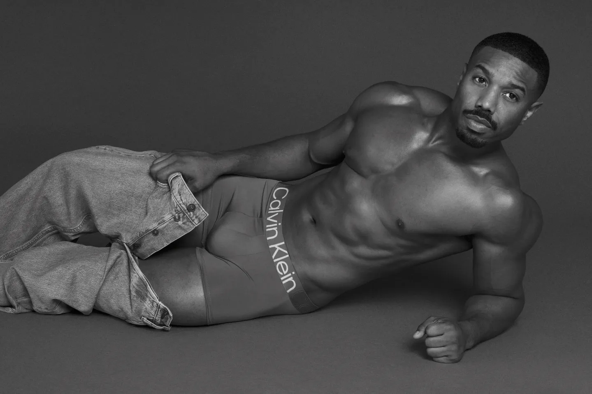
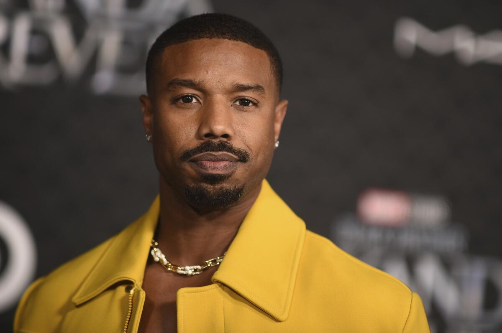

Michael Bakari Jordan |
|  |
1.Resumen de la vida personal
Michael B. Jordan. Jordan, es un actor, director y productor estadounidense. Es conocido por interpretar al personaje de Erik Killmonger, el primo y enemigo de T'Challa, en Black Panther (2018), y a Adonis Creed, hijo del boxeador ficticio Apollo Creed, en Creed (2015), Creed II (2018) y Creed III (2023) B. Jordan nació en Santa Ana, California, hijo de Donna (de soltera Davis), una consejera de artistas y profesora de escuela secundaria, y Michael A. Jordan, un empresario de cáterin.234Él es el segundo de tres hijos con una hermana mayor, Jamila, que trabaja en la producción cinematográfica, y un hermano menor, Khalid, quien fue un jugador de fútbol en la Universidad de Howard.5. La familia de Jordan pasó dos años en California antes de trasladarse a Newark, Nueva Jersey, de donde se considera originario.6Asistió a Newark Arts High School, donde su madre trabaja, y donde él jugó al baloncesto. El segundo nombre de Jordan es Bakari, que en idioma suajili se traduce como 'noble promesa'. Jordan inicialmente trabajó como modelo para varias compañías y marcas, incluidos los productos deportivos de Modell y Toys "R" Us, antes de decidirse a emprender una carrera como actor.89 Lanzó su carrera como actor profesional en 1999, cuando apareció brevemente en un episodio de las series Cosby y The Sopranos. 2 Al año siguiente, fue seleccionado entre cientos de aspirantes para interpretar a Jamal en el largometraje de Paramount Pictures, Hardball, protagonizado por Keanu Reeves. Antes de dar comienzo a su carrera en los largometrajes, Michael era más conocido por habe r interpretado dos de los más importantes dramas televisivos de la década de 2000. Primero, recibió el elogio de la crítica por su retrato del joven urbanita de dura apariencia y buen corazón, Wallace, en la exitosa serie dramática de HBO The Wire (2002). Luego protagonizó, en el papel de Vince Howard, capitán de un equipo de fútbol americano, la serie aclamada por la crítica y ganadora de un Emmy, Friday Night Lights (2009) de la NBC. Apareció en el capítulo 14 de la octava temporada de House M.D. en el papel de paciente del mítico doctor. También encarnó al alcohólico en fase de recuperación, Alex, en la tercera temporada de la serie de NBC, Parenthood (2010). |
 |
|
Premios obtenidos
|
|
Mejores peliculas |
|
| Año | Pelicula |
| 2018 | Creed II: La leyenda de Rocky |
| 2015 | Creed. La leyenda de Rocky |
| 2020 | Black Panther |
| 2021 | Cuestión de justicia |
| 2020 | Educar a un superhéroe |